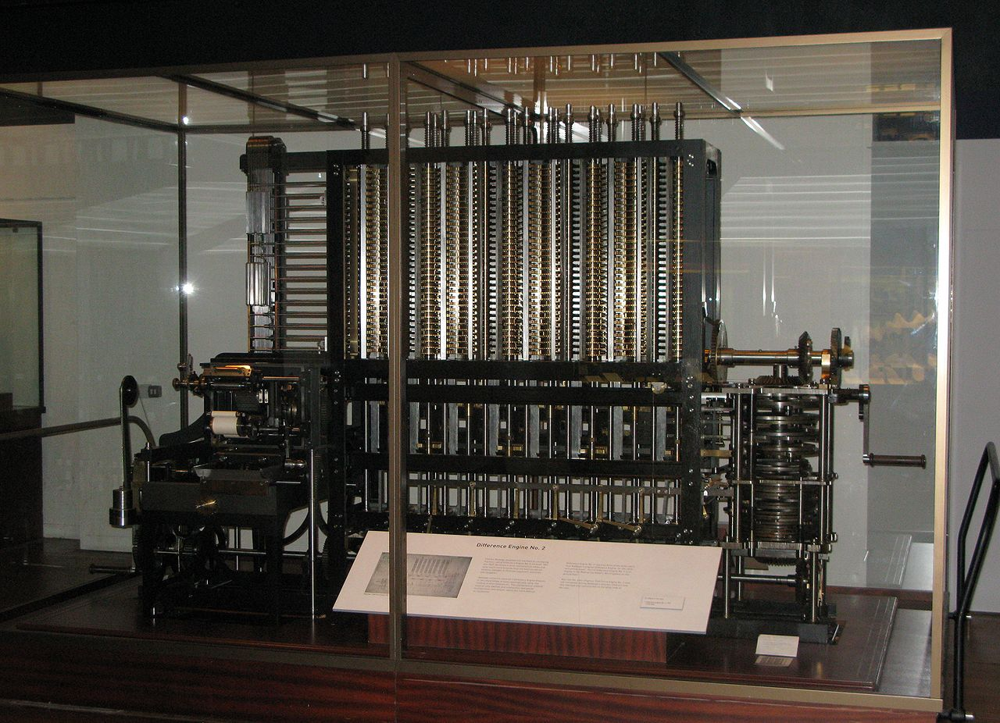
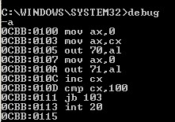

📜 Abakus – první výpočetní nástroj
Abakus je považován za vůbec první nástroj, který lidé používali k výpočtům. Vznikl před tisíci lety v Číně, Mezopotámii i dalších částech světa. I když vypadal jednoduše – rám s tyčkami a posuvnými kuličkami – byl to velmi praktický a přesný nástroj. Pomáhal sčítat, odčítat, násobit i dělit. Byl to důležitý krok k moderním počítačům, protože ukázal, že stroje mohou lidem pomáhat počítat.

⚙️ První mechanické počítače
První mechanické počítače vznikly v 17. a 19. století. Jedním z prvních byl Pascalin, který vymyslel Blaise Pascal pro svého otce – daňového úředníka. Později přišel Charles Babbage se svým návrhem „analytického stroje“, který měl fungovat jako moderní počítač – uměl by počítat podle programu. I když jeho stroj nikdy nebyl dokončen, jeho nápady silně ovlivnily budoucnost informatiky.
💡 Zajímavost: První program pro tento stroj napsala Ada Lovelace – matematička, kterou dnes mnozí považují za vůbec první programátorku na světě.

💻 První programovací jazyky
Na začátku počítače rozuměly jen jednoduchým číslům. Programátoři museli psát složité binární kódy. Postupně ale vznikly první programovací jazyky jako Fortran nebo Assembly, které umožnily psát programy srozumitelnějším způsobem. Díky tomu mohli programovat i lidé, kteří nebyli experty na hardware. Tyto jazyky umožnily rozvoj softwaru a posunuly vývoj technologií kupředu.
